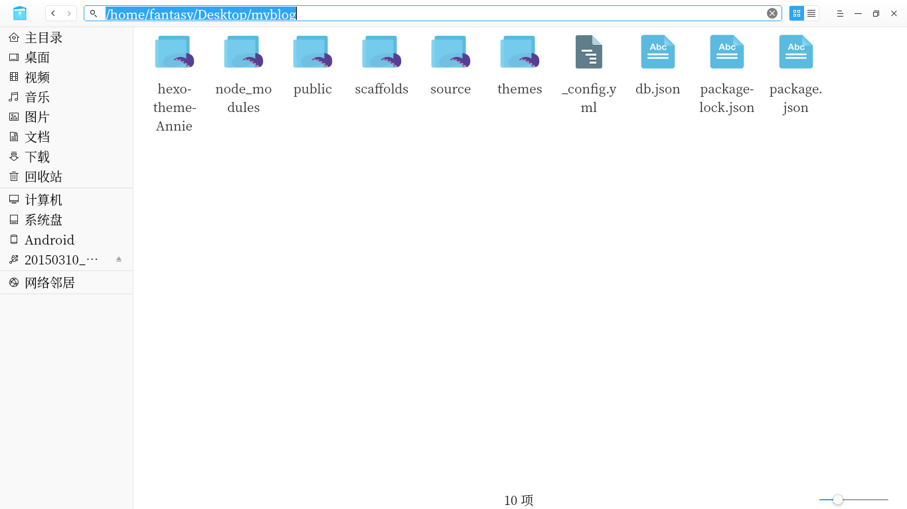
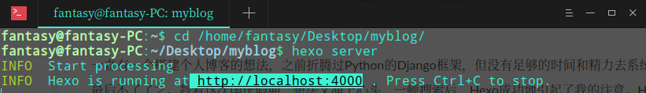
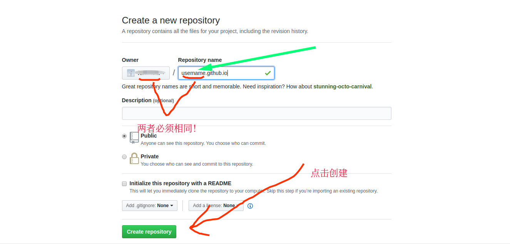
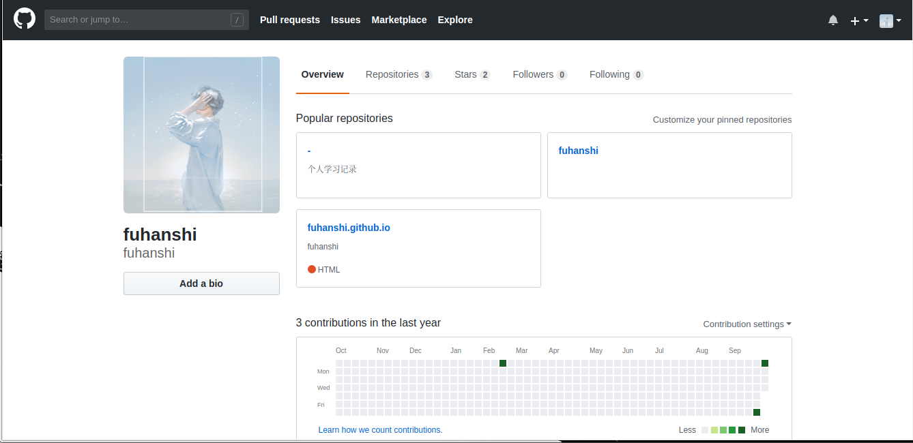
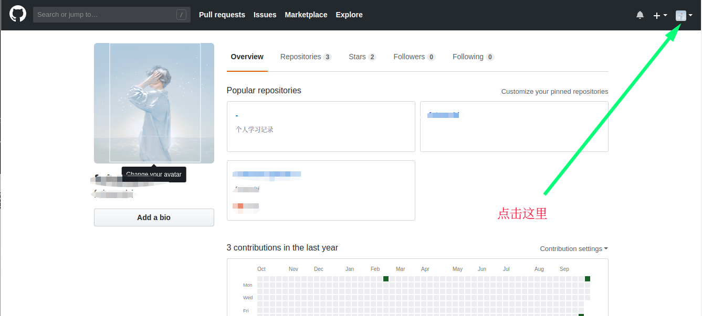
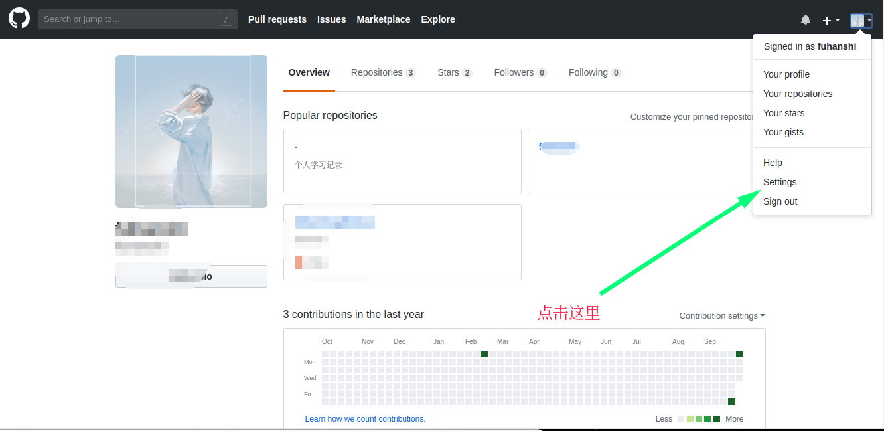
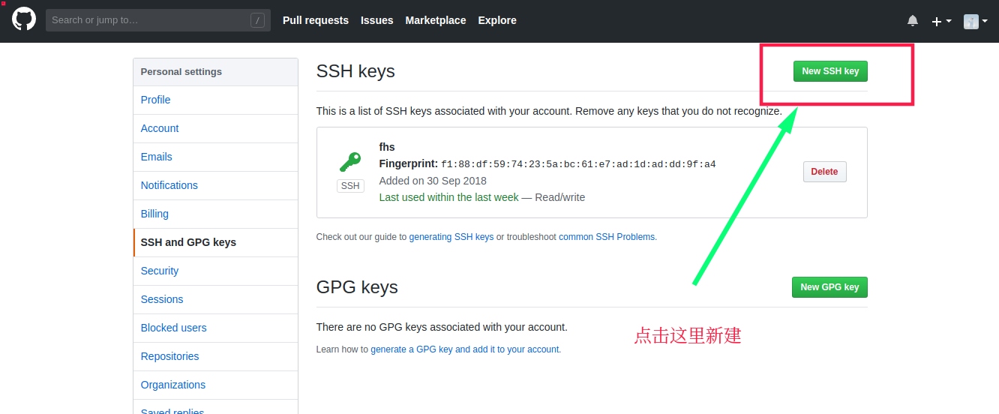
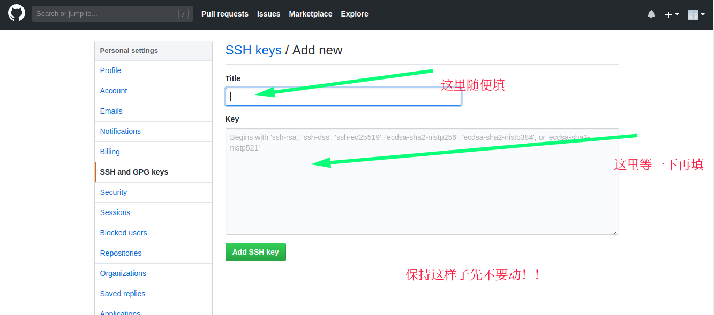

一直有一个搭建个人博客的想法，之前折腾过Python的Django框架，但没有足够的时间和精力去系统的学习Django，最后不了了之。趁着这次国庆假期，想法又涌上心头，一顿搜索后，Hexo成功地引起了我的注意。Hexo搭配Github，可以实现免费建站，具体来说，就是将博客的一些配置文件以及博客内容同步存储到你自己的Github仓库而不需要额外购买域名。这篇文章便记录了从零开始利用Hexo+Github实现免费搭建个人博客的步骤。
1.安装Node.js
1 | 访问 http://nodejs.cn/download/，下载系统对应的版本安装即可 |
2.安装Git
1 | 访问 https://git-scm.com/downloads，同上 |
3.安装Hexo
使用npm来安装Hexo，所以先安装npm1
sudo apt-get install npm
然后就可以安装Hexo了1
npm install hexo-cli g
注意：使用npm网速较慢，建议多试几次，或者直接切换为国内源：1
npm config set registry "https://registry.npm.taobao.org"
4.使用Hexo
首先创建一个用来存放博客的文件夹，比如我创建了一个名字为”myblog”的文件夹，那么就进入该文件夹目录下：1
cd /home/fantasy/Desktop/myblog
注意：cd 后面的是你的文件夹的完整路径
接下来初始化你的文件夹1
hexo init myblog
之后你就会看到文件夹出现了一堆文件，如图

现在基本的操作就完成了
5.在本地部署博客
1 | hexo claen |
首先安装server1
npm install hexo-server --save
然后开启本地服务器1
hexo sever
会输出一个网址，如图

复制输出的网址，在浏览器中打开即可访问博客，或者也可以直接复制以下网址1
http://localhost:4000/
6.将博客部署到Github上
首先去官网注册一个Github账号，然后登入你的账号
现在来创建一个新的Repositories,配置如图

然后配置生成ssh key
配置SSH key
1 | mkdir ~/.ssh |
接着是一路回车
然后输入以下代码1
cat ~/.ssh/id_rsa.pub
你会看到输出了一些字符串，这就是SSH密钥，复制它们
接下来进入你的Github主页，如图

接下来的步骤都写在图片里了，看图


点击左侧的SSH and GPG keys，继续看图


现在，将之前复制的内容粘贴到上图所示位置的Key框里面，点击Add SHH key，SSH key配置完毕
配置Git
1 | git config –global user.ame “xxx” |
其中，第一个xxx填写你的Github用户名，也就是之前创建Repositories的时候在用的那个；
第二个需要把双引号里面的内容替换为你注册Github时所使用的邮箱
这样子就配置完成了Git，可以输入下面的代码做一个测试1
ssh -T git@github.com
修改配置文件
进入之前你创建的文件夹,打开config.yml文件，拉到最下面，修改deploy的配置为如下代码1
2
3
4
5
6
7
8## Docs: https://hexo.io/docs/deployment.html
deploy:
# 类型
type: git
# 仓库
repo: git@github.com:username/username.github.io.git
# 分支
branch: master
其中的usename改为你自己的Github用户名即可，点击保存
部署到Github
终于到这一步了
依下次输入以下3行代码1
2
3hexo clean
hexo generate
hexo deploy
这样子部署工作就彻底完成了
8.测试访问你的博客
在浏览器的网址输入框输入1
usename.github.io
其中,usename依旧是你的Github用户名
以上便是搭建博客的全部步骤